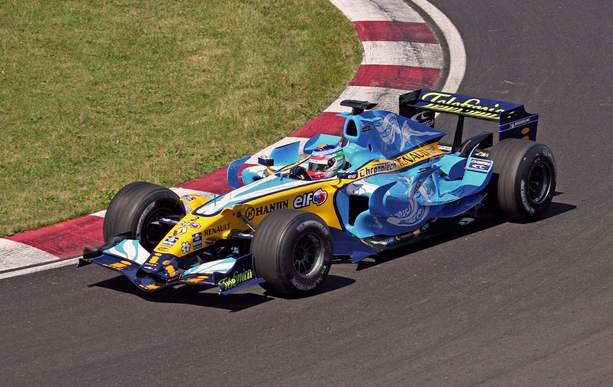
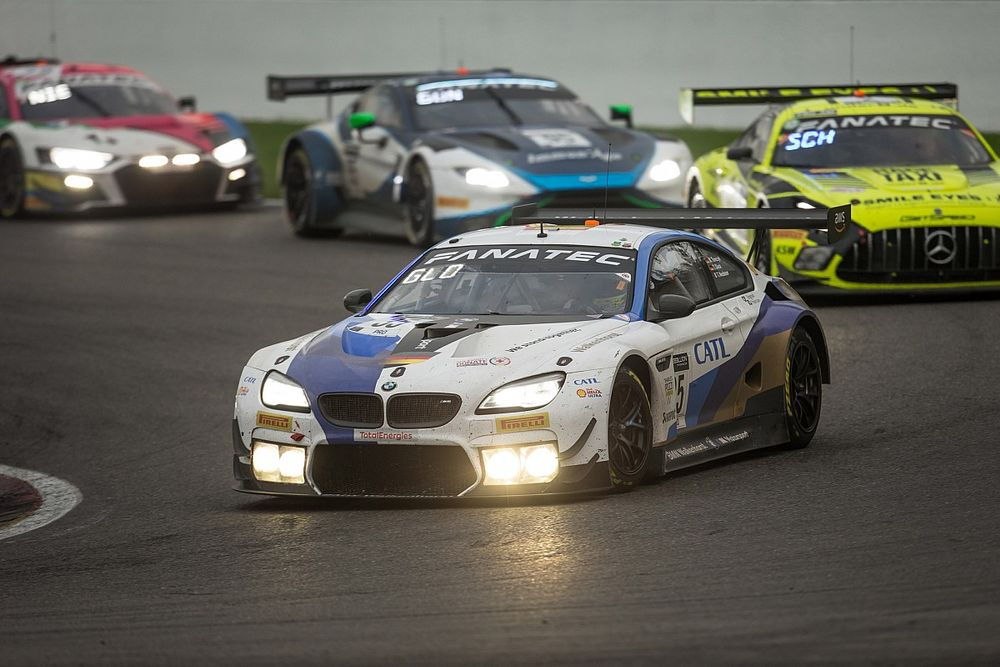
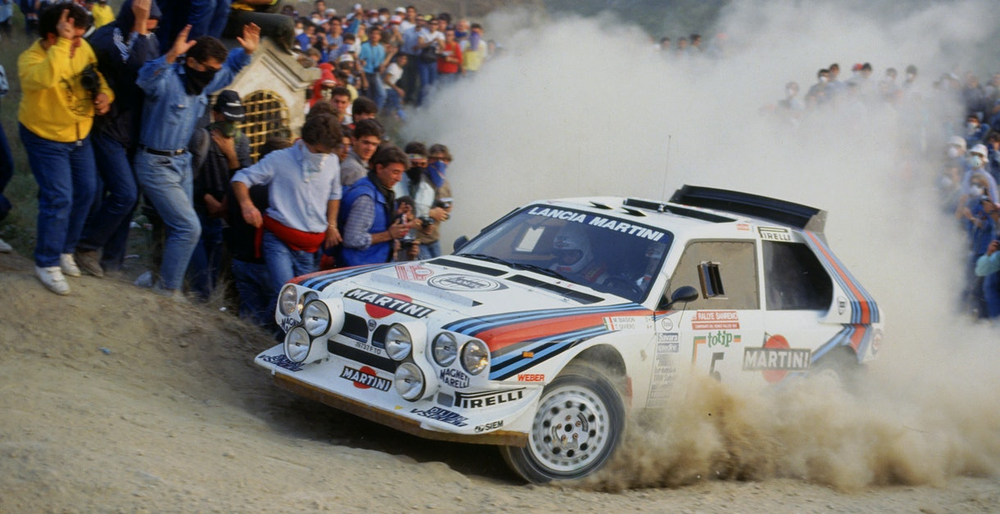
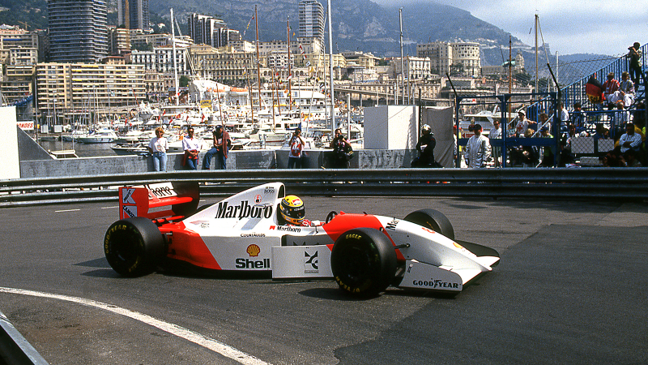

Motorsports
F1
Formula One (also known as Formula 1 or F1) is the highest class of international racing for open-wheel single-seater formula racing cars sanctioned by the Fédération Internationale de l'Automobile (FIA). The World Drivers' Championship, which became the FIA Formula One World Championship in 1981, has been one of the premier forms of racing around the world since its inaugural season in 1950. The word formula in the name refers to the set of rules to which all participants' cars must conform. A Formula One season consists of a series of races, known as Grands Prix, which take place worldwide on both purpose-built circuits and closed public roads.
Gt3
Group GT3, known technically as Cup Grand Touring Cars and commonly referred to as simply GT3, is a set of regulations maintained by the Fédération Internationale de l'Automobile (FIA) for grand tourer racing cars designed for use in various auto racing series throughout the world. The GT3 category was initially created in 2005 by the SRO Group as a third rung in the ladder of grand touring motorsport, below the Group GT1 and Group GT2 categories which were utilized in the SRO's FIA GT Championship, and launched its own series in 2006 called the FIA GT3 European Championship. Since then, Group GT3 has expanded to become the de facto category for many national and international grand touring series, although some series modify the ruleset from the FIA standard. By 2013, nearly 20 automobile manufacturers have built or been represented with GT3 machines.
Rally
Rally is a wide-ranging form of motorsport with various competitive motoring elements such as speed tests (often called rally racing), navigation tests, or the ability to reach waypoints or a destination at a prescribed time or average speed. Rallies may be short in the form of trials at a single venue, or several thousand miles long in an extreme endurance rally. Depending on the format, rallies may be organised on private or public roads, open or closed to traffic, or off-road in the form of cross country or rally-raid. Competitors can use production vehicles which must be road-legal if being used on open roads or specially built competition vehicles suited to crossing specific terrain. Rallying is typically distinguished from other forms of motorsport by not running directly against other competitors over laps of a circuit, but instead in a point-to-point format in which participants leave at regular intervals from one or more start points.
